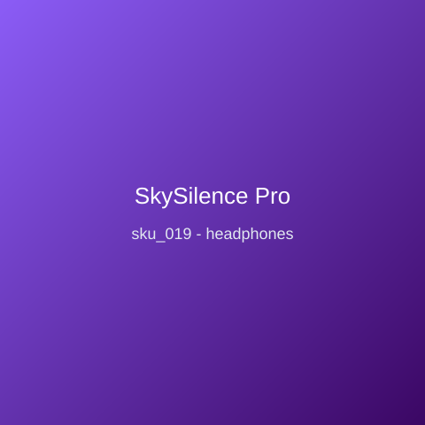

Price: ₹8,999
Over-ear active noise-cancelling headphones tuned for long-haul focus. Hybrid ANC attenuates cabin and office noise; 40-hour battery with USB-C fast charge; multipoint Bluetooth 5.3 with LDAC; memory-foam earcups; foldable aluminium yokes; includes flight adapter and hard case; wear detection pauses playback the moment you take them off.